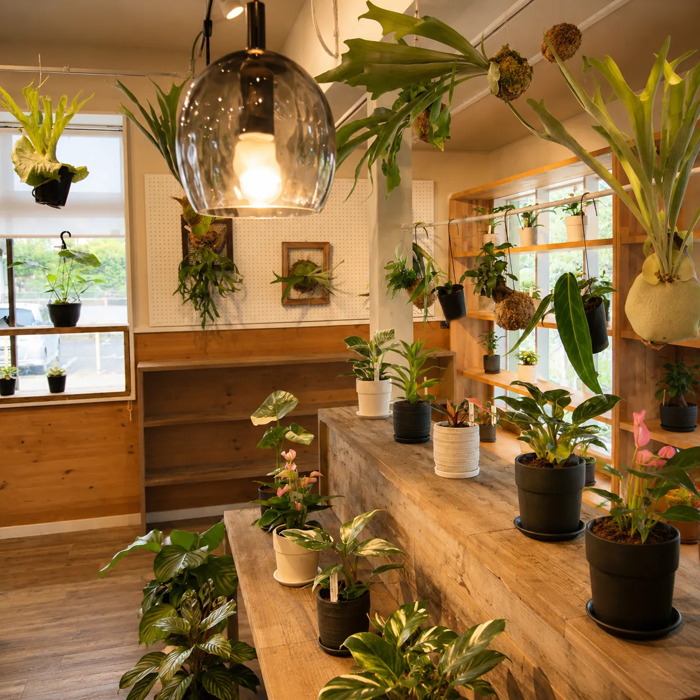
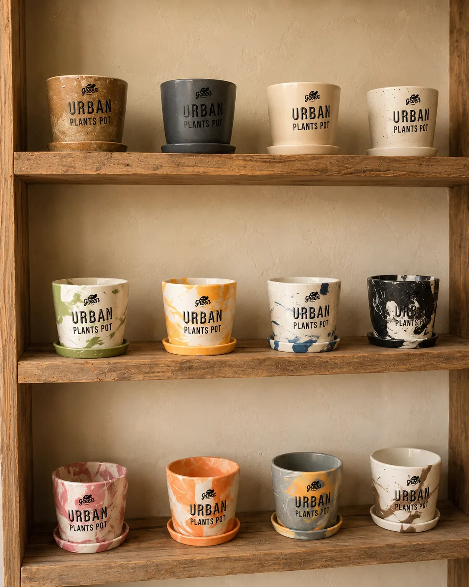

熊本で観葉植物を買うなら｜植物屋・園芸店の選び方と初めての一鉢

熊本で観葉植物を買うとき、植物屋・園芸店・ホームセンターのどこを選べばいいのか迷う方は多いはずです。この記事では、お店の種類ごとの違いと、初めての一鉢の選び方、元気な株の見分け方、熊本の夏と冬に気をつけたい持ち帰り方までをまとめました。
植物屋・園芸店・ホームセンターはどう選ぶ？
観葉植物を買える場所は、大きく分けて次の五つです。
- 観葉植物の専門店・セレクトショップ（いわゆる植物屋）
- 園芸店・ガーデンセンター
- ホームセンターの園芸コーナー
- 花屋
- インターネット通販
どこで買う場合も、株の状態と自宅の環境に合うかを確かめることが基本です。そのうえで、お店の種類によって選べる品種の幅と、相談できるかどうかが違います。
植物屋やセレクトショップは、インテリアに合わせやすい観葉植物を中心に、ほかではあまり見かけない品種まで並んでいることが多いお店です。鉢カバーや雑貨も一緒に見られるので、部屋に置いたときの姿を想像しながら選べます。
園芸店やガーデンセンターは、屋外の花苗や野菜苗、土や肥料まで幅広くそろうのが強みです。ベランダや庭の植物と一緒に探したいときに向いています。
ホームセンターは、ポトスやパキラなど定番の品種を手に取りやすい価格帯で見つけやすく、ついでに土や受け皿まで買えるのが便利です。
花屋は贈り物向けの観葉植物を扱うお店が多く、ラッピングまでお願いしやすいのが特長です。通販は品ぞろえが豊富で大きな鉢も自宅まで届きますが、実物の葉の色や株の形は届くまで分かりません。
初めての一鉢は何を基準に選べばいい？
お店に行く前に決めておきたいのは「どこに置くか」です。好みの品種を選ぶ前に置き場所を決めると、候補が自然としぼられます。
- 置きたい場所を決める（窓辺・リビングの奥・玄関・デスクなど）
- その場所の明るさを確かめる（レースカーテン越しに日が入るか、昼でも照明が必要か）
- 置ける大きさを測る（床置きか棚の上か、置く場所の幅・奥行きと、葉を含めた高さ）
- 水やりにかけられる手間を考える（週に何回くらい様子を見られるか）
お店では、この四つと「冬の部屋の冷え込み具合」を伝えると、候補をしぼりやすくなります。
明るい窓辺に置けるなら、モンステラやフィカス・ウンベラータ、ガジュマルのように光を好む植物がのびのび育ちます。部屋の奥のように光が届きにくい場所なら、比較的暗さに強いポトスやサンスベリアが候補になります。ただし、暗さに強い植物でも、光がまったく入らない場所に置き続けると弱りやすくなります。基本の置き場所は、昼に照明をつけなくても新聞が読める程度の明るさがあるところを目安に選んでください。
初めてなら、片手か両手で持ち運べる大きさの鉢が扱いやすいでしょう。水やりのときに流しへ運んだり、季節に合わせた移動をしたりもしやすくなります。
「あまり手をかけられない」という方は、乾燥に比較的強い品種を選ぶと続けやすくなります。サンスベリアや、幹に水分をためておけるガジュマルがその代表です。ガジュマルの置き場所や水やりはガジュマルの育て方で詳しくまとめています。
お店で元気な株を見分けるには？
同じ品種が並んでいても、一鉢ずつ状態は違います。お店では次の点を見てみてください。
- 新しい葉が出ていて、色つやがよいか
- 葉の裏や付け根に、小さな虫や白い綿のようなものが付いていないか
- 茎の根元を軽く支えたとき、株がぐらぐらしないか
- 土の表面にカビや強いにおいがないか
- 下の葉が大量に黄色くなっていないか
下葉が一、二枚黄色くなっている程度なら、古い葉が入れ替わっているだけの場合もあります。気になる点があれば、遠慮なくお店の人に聞いてみるのがいちばんです。どのくらいの頻度で水をあげていたか、どんな場所に置いていたかを聞いておくと、家に帰ってからの管理の参考になります。

熊本で観葉植物を買うのにいい季節は？
植物の生育が活発な春から初夏、そして暑さが落ち着く秋は、新しい環境に慣れやすく、買いどきとされています。熊本でいえば、真夏の強い日差しと暑さがやわらぐ秋口は、育て始めやすい時期のひとつです。ただし晩秋に近づくと明け方の冷え込みが強くなるので、寒さに弱い品種を迎えるなら、置き場所の夜の室温がどのくらいまで下がるかを先に確かめておくと判断しやすくなります。
夏や冬に買ってはいけない、ということではありません。気をつけたいのは「持ち帰り」と「最初の置き場所」です。
熊本は車で移動する方が多い土地柄です。夏の車内は短時間でも高温になりやすいので、買い物の最後にお店へ寄る、エアコンの効いた車内に乗せてすぐ帰るなど、植物を車に置いたままにしない工夫をしてください。冬は逆に、明け方や夜に冷え込みが強くなります。寒さに弱い品種は、袋や新聞紙で包んでもらい、冷たい外気に長く当てないようにしましょう。
冬に迎えた植物の置き場所や水やりの減らし方は、冬の観葉植物の管理の記事も参考にしてください。
買ったあとの最初の1〜2週間はどうする？
家に迎えた植物は、お店とは光の量も温度も変わるので、少しずつ新しい環境に慣れていきます。最初の1〜2週間ほどは、次のことを意識してみてください。
- 置き場所を決めたら、なるべく動かさない
- 直射日光の当たる場所は避け、明るい日陰から始める
- 水やりは土の乾き具合を確かめてから（目安として、指を2〜3cm差し込んで湿り気がなければ与える。品種や季節で変わるので、購入時に聞いておくと確実です）
- 受け皿にたまった水は捨てる
- 植え替えや肥料は、環境に慣れてから
迎えてすぐに葉が一、二枚落ちることがあります。環境の変化による場合も多く、慌てて水を増やしたり、置き場所を何度も変えたりするほうが株の負担になることがあります。新しい葉が伸びてくるかを見守ってください。
一方で、次のような様子が続くときは、様子見だけで済ませず、購入したお店に相談してみてください。
- 毎日のように葉が落ち続ける
- 土が湿っているのに、葉や茎がしおれていく
- 茎の根元が黒っぽく、やわらかくなっている
- 葉の裏に虫が増えている
植え替えは、生育期（春から初夏が目安）に行うのが基本です。根が鉢底から大きくはみ出している、水がなかなか染み込まないなど気になる状態があれば、時期を含めて購入したお店に相談してみてください。
鉢カバーや雑貨も一緒に選ぶと何がいい？
観葉植物の多くは、お店ではプラスチックの鉢に植えられた状態で並んでいます。そのまま飾ってもよいのですが、鉢ごと鉢カバーに入れると、部屋の雰囲気にぐっとなじみます。

鉢カバーを使えば、植え替えをしなくても見た目を変えられ、水やりのときはカバーから中の鉢だけ取り出せます。選ぶときは、中の鉢がすっぽり入る大きさかどうかと、底に水がたまったときに確認しやすい形かどうかを見ておきましょう。
植物と雑貨を同じお店で選べると、「この棚にこの鉢カバーとこの植物」と組み合わせを考えながら決められます。北欧雑貨との合わせ方も、店頭で一緒に考えられます。
まとめ
熊本で観葉植物を買うときは、まず置き場所と大きさを決め、そこに合う品種を、実物の状態を確かめながら選ぶのが基本です。
- お店の種類で、品ぞろえと相談のしやすさが違う
- 置き場所の明るさから品種をしぼる
- 新芽・葉の裏・株のぐらつきを見て元気な株を選ぶ
- 夏の車内と冬の冷え込みに気をつけて持ち帰る
- 迎えてしばらくは水をあげすぎず、動かしすぎない
- 落葉やしおれが続くときは、早めにお店に相談する
HYGGE PLANTS & ZAKKAは、熊本市南区幸田にある観葉植物と北欧雑貨のセレクトショップです。ビカクシダやアンスリウム、フィカスなどの植物や鉢カバー、雑貨を取り扱っています。在庫は日によって変わるため、来店時の品ぞろえは店頭でご確認ください。配送は行っておらず店頭でのお渡しのみなので、大きな鉢は車の荷室の広さも確かめてからお越しください。「この場所に置きたい」「あまり手をかけられない」といったご相談からでもお気軽にどうぞ。
よくある質問
- 予算はどのくらい見ておけばいいですか？
- 植物の価格は品種と大きさで大きく変わり、希少な品種ほど高くなる傾向があります。鉢カバーや受け皿、土を一緒にそろえる場合はその分も含めて考えておくと、お店で迷いにくくなります。
- 大きな鉢はどうやって持ち帰ればいいですか？
- 葉を含めた高さと幅を測っておき、車の荷室や後部座席に寝かせずに置けるかを確かめておくと安心です。葉や枝が折れないよう、袋や紙で包んでもらい、走行中に倒れないよう固定してください。
- 買った植物に虫がいたらどうすればいいですか？
- 見つけた虫は、濡らしたティッシュなどでふき取り、ほかの植物から少し離して様子を見ます。数が多い場合や何度も出る場合は、購入したお店に相談すると対処法を教えてもらえます。
- 贈り物用の観葉植物も同じ選び方でいいですか？
- 基本は同じですが、贈る相手の置き場所の明るさや広さを、さりげなく聞いておくと選びやすくなります。大きさや品種の目安は下の「あわせて読みたい」にある開店祝い・新築祝いの記事でまとめています。
HYGGE（ヒュッゲ）のお店
観葉植物と北欧雑貨のお店です。実物を見て選びたい方は、お気軽にお立ち寄りください。
熊本市南区幸田1丁目7-15／11:00〜17:00（水・土定休）／駐車スペースあり